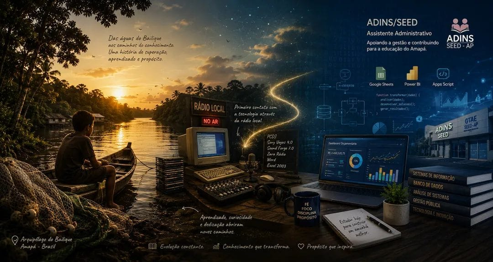
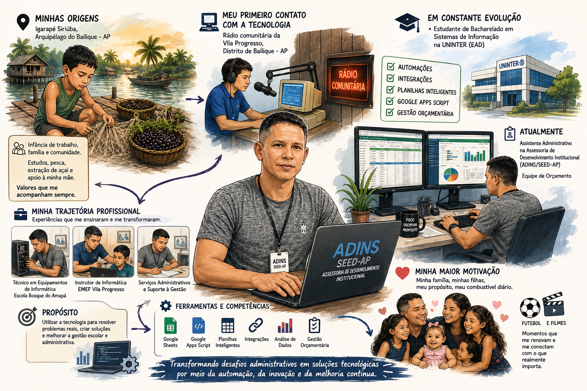

Olá, eu sou Lindanor Vilhena!
Sou estudante de Bacharelado em Sistemas de Informação na UNINTER (EAD) e desenvolvo minhas atividades profissionais como Assistente Administrativo na Assessoria de Desenvolvimento Institucional (ADINS/SEED-AP). No meu dia a dia, busco aliar a tecnologia à gestão de processos, desenvolvendo automações em Google Apps Script, integrações e fórmulas avançadas para otimizar fluxos orçamentários e rotinas institucionais.
Minha trajetória na tecnologia começou de forma prática e comunitária. Nascido e criado em uma comunidade ribeirinha do Arquipélago de Bailique, tive meu primeiro contato com o computador em uma rádio comunitária local. Essa curiosidade inicial transformou-se em profissão: atuei no cartório local, fui Técnico em Equipamentos de Informática na Escola Bosque do Amapá e Instrutor de Informática básica para o ensino fundamental de 09 anos na EMEF Vila Progresso.
Ao longo dos anos, passei a utilizar a tecnologia para resolver problemas reais de gestão escolar e administrativa, desde a manutenção de hardware, software até a criação de diários de classe automatizados. Essa vivência moldou minha capacidade de resolver problemas práticos e pavimentou meu caminho até a ADINS/SEED, onde componho a equipe de orçamento e sigo criando ferramentas de automação.
Além da vida profissional e acadêmica, valorizo profundamente minha família. Sou pai de quatro filhas, que representam minha maior motivação para buscar crescimento contínuo nos estudos, no trabalho e na vida. Nos momentos livres, gosto de jogar futebol, assistir a bons filmes e compartilhar momentos com quem amo. Entre sair ou ficar em casa, minha escolha quase sempre será estar ao lado da minha família, que é meu maior alicerce e a principal razão pela qual busco entregar o meu melhor todos os dias.

Minha Trajetória: Das origens no Bailique à gestão tecnológica na ADINS/SEED
Resumo Visual: Origens, jornada profissional e motivações